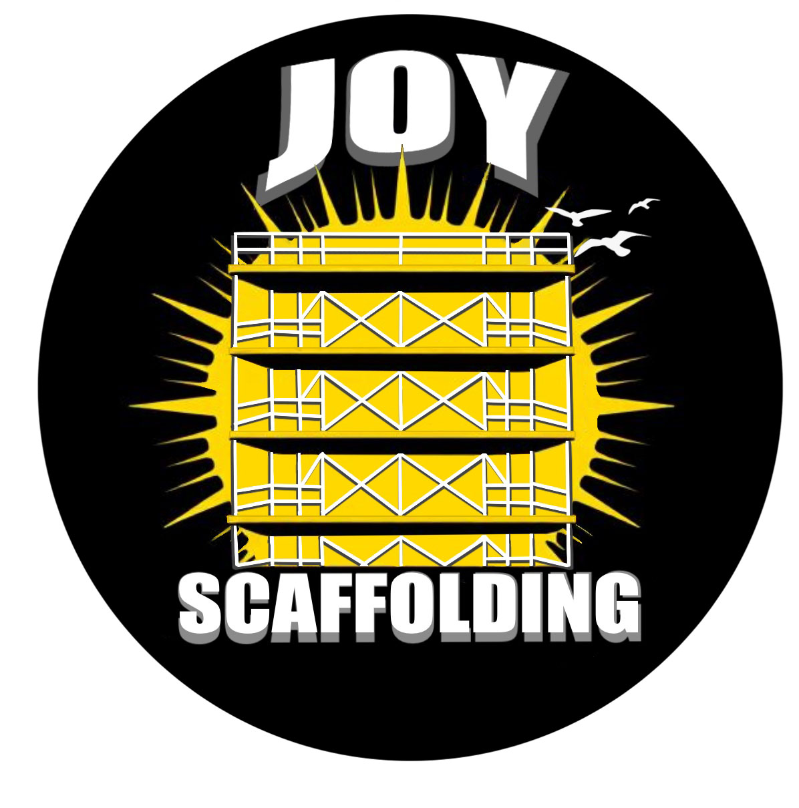

back to main page
year 1 projects
LOGOS
The logos displayed here where done for verious clients the first for a local scaffolding company, the next a university society and the last being a exersise creating a logo for a non existant games company.

Creating this logo for a local scaffolding company i made sure to add all the aspects the client wanted, he wanted to display the name in visual form in the logo, a sun and birds to symbolise joy and also display the scaffolding side of the company.
The client from this logo wanted to use the design for socail media promotion and asked for a design that captured the essents of the society whilst kepping the design formal and sophisticated.
As i had no client for this project the whole design was up to my interpretaion i took from the name and designed a steath themed logo with a ninja protruding from the logo and a simplistic monochromatic design.